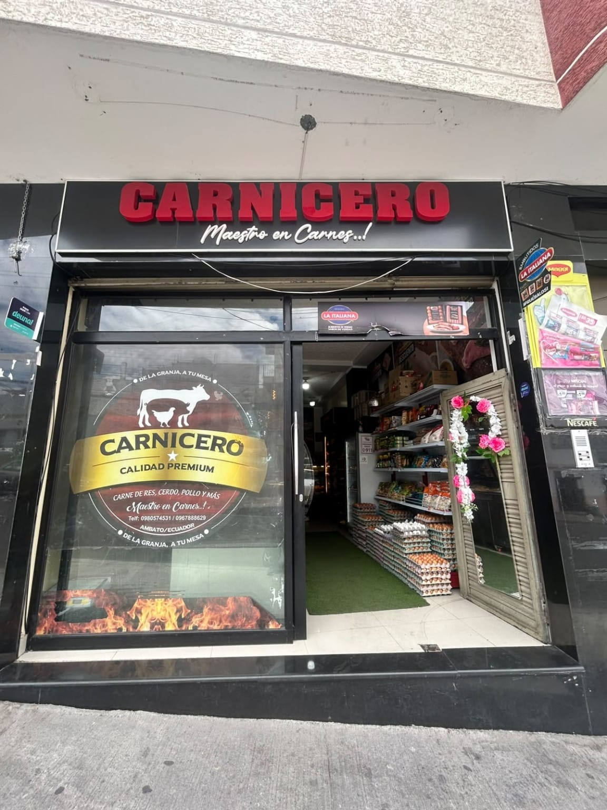
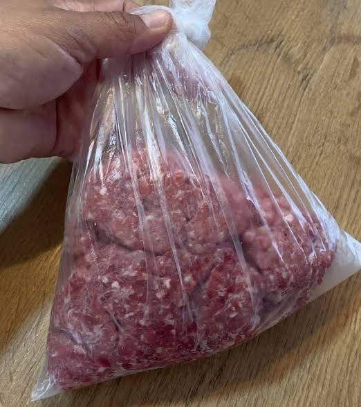

Conoce nuestro local

Te damos la bienvenida a Carnicero Maestro en Carnes. Conoce nuestro establecimiento y descubre nuestra identidad, variedad y compromiso con tu mesa.

Variedad, sabor y calidad para tu mesa
Explorar productosUn espacio donde encuentras variedad de carnes y productos para acompañar tus comidas y compartir en familia.
En Carnicero Maestro en Carnes ofrecemos una amplia variedad de productos para las necesidades de cada hogar. Contamos con carnes de res, cerdo, pollo, embutidos y productos complementarios.
Nuestro propósito es brindar alternativas, variedad y una atención cercana para que encuentres lo que necesitas en un solo lugar.

Descubre nuestra variedad de carnes y productos complementarios.

Ideal para caldos y sopas tradicionales.
$3,00 / libra
Para preparar a la plancha o en sartén.
$3,50 / libra
Perfecta para parrilladas y asados.
$4,00 / libra
Para sopas y preparaciones especiales.
$3,50 / libra
Ideal para guisos y comidas tradicionales.
$3,50 / libraPara hamburguesas, rellenos y salsas.
$3,50 / libra
Una alternativa para distintas recetas.
$2,50 / libra
Para preparaciones tradicionales.
$3,50 / libra
Corte especial para parrilla.
$6,00 / libra
Corte suave para ocasiones especiales.
$6,00 / libra
Corte para preparar a la parrilla.
$6,00 / libra
Corte especial con hueso.
$9,00 / libra
Una opción para asados y parrilladas.
$6,00 / libra
Ideal para caldos y sopas.
$2,00 / libra
Lista para preparar en casa.
$4,00 / libra
Para caldos y preparaciones especiales.
$2,50 / libra
Para horno, parrilla o guisos.
$3,50 / libra
Ideal para almuerzos y cenas.
$3,50 / libra
Para asados y diferentes recetas.
$4,00 / libra
Para platos tradicionales.
$3,50 / libra
Para asar o preparar en sartén.
$4,00 / libra
Para rellenos y preparaciones caseras.
$3,50 / libra
Para recetas tradicionales.
$2,00 / libra
Para distintas preparaciones.
$2,00 / libra
Para hornear y compartir en familia.
$3,50 / libra
Un corte especial y versátil.
$4,50 / libra
Para preparar al horno o guisado.
$1,50 / libra
Ideal para filetes y preparaciones.
$2,00 / libra
Para hornear, freír o guisar.
$1,75 / libra
Una opción para diferentes preparaciones.
$1,75 / libra
Para preparar al horno o fritas.
$1,50 / libra
Porciones listas para cocinar.
$1,75 / libra
Para caldos y sopas.
$1,00 / libra
Para sopas y preparaciones caseras.
$1,25 / libra
Para desayunos y sánduches.
$2,50 / libra
Para desayunos y meriendas.
$3,50 / libra
Para complementar tus preparaciones.
$4,00 / libra
Para platos tradicionales.
$5,00 / libra
Para distintas preparaciones.
$2,50 / libra
Para preparar platos tradicionales.
$3,00 / libra
Un complemento para diferentes platos.
$0,43 / libra
Un alimento básico para el hogar.
$0,60 / libra
Presentación en paquete.
$1,00 / paquete
Para la preparación de tus alimentos.
$1,00 / unidad
Para desayunos y preparaciones caseras.
$3,00 / cubetaTrabajamos para ofrecer una experiencia de compra sencilla, con productos variados y atención cercana.
Diferentes tipos de carnes y productos para acompañar las comidas de cada día.
Opciones para distintos gustos y necesidades del hogar.
Un trato cordial y cercano para nuestros clientes.
Estamos listos para atenderte y ofrecerte nuestros productos.
Nombre: Carnicero Maestro en Carnes
Dirección: Av. Pichincha y Latacunga, Ambato, Tungurahua
Teléfono: 0960997443
Ciudad: Ambato - Ecuador